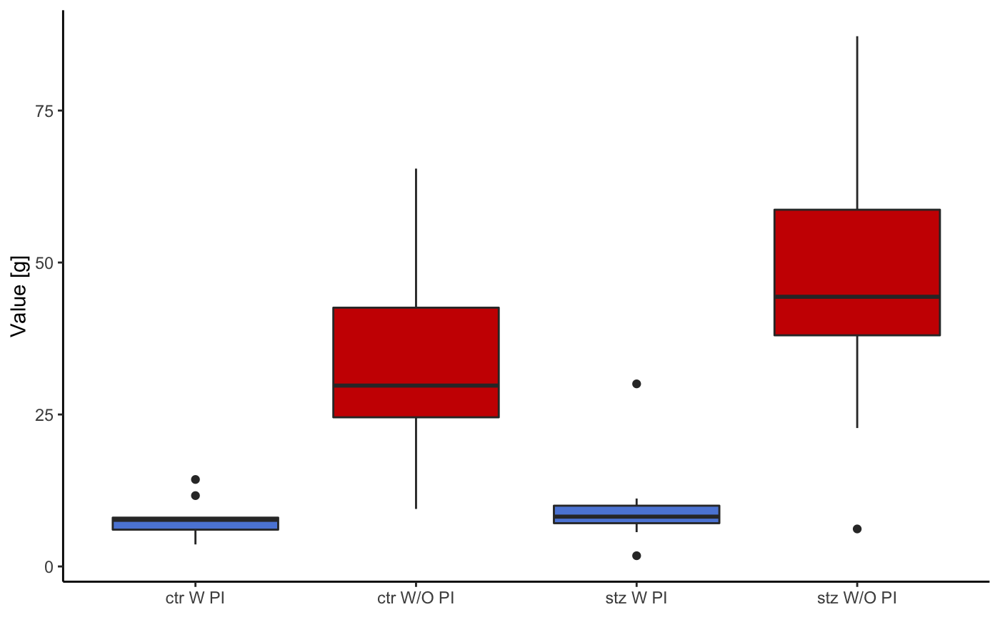
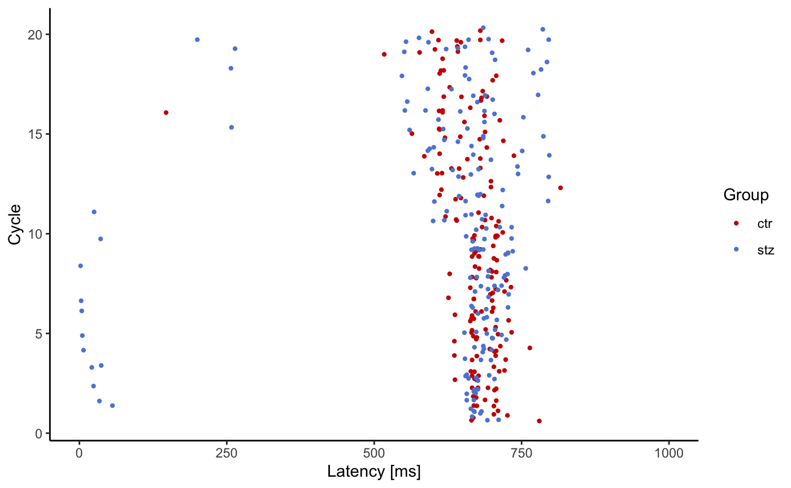

ratPASTA - R-based Awesome Toolbox for Platform for Acoustic STArtle
Source:vignettes/ratPASTA.Rmd
ratPASTA.RmdLoading the data
Load the package with the following code:
library(ratPASTA)
The loadStartleData() function will load all .pasta files from the working directory, merge them and identify impulses with built-in metadata. Navigate to a folder with all pasta files and run the following command:
df <- loadStartleData(addhead = 0.5, addtail = 0.5)The specified addtail and addhead arguments take into account the the latency of the animal (Figure 1 explains this concept). Additionally, this function will also correct the values for the weight of the animals, based on the mass.json file in the working directory.
Alternatively, data can be loaded by specifying the names of all pasta files. To do so, set auto_import argument to FALSE and specify data as a list containing all pasta data. To do so, manualy import all .pasta files as csv files, place them in a list. Unless correction = FALSE, mass should be provided as well.
df <- loadStartleData(auto_import = FALSE, data = list, mass = mass)
Figure 1. An illustration of the startle experiment. One cycle is the period from the start of the one startling sound - addhead time, till the next startling sound - addhead. Latency of the animal is measured from the startling sound till the maximum value. Values that fall within the period from (impulse start time - addhead) to (impulse end time + addtail) are binned in the I (impulse) category. Other values are a part of No I category (No impulse = between two impulses)
Summary
The function summariseStartle() is used to return a mathematical summary of the startle data.
summariseStartle(df) #> $Values #> # A tibble: 8 x 9 #> # Groups: stage, impulse [4] #> stage impulse lgroup `mean(value)` `sd(value)` `min(value)` `median(value)` #> <fct> <fct> <chr> <dbl> <dbl> <dbl> <dbl> #> 1 W/O … No I ctr 5.00 8.76 0.000256 2.45 #> 2 W/O … No I stz 7.34 19.3 0.0000971 3.02 #> 3 W/O … I ctr 34.0 80.5 0.000642 4.85 #> 4 W/O … I stz 47.9 111. 0.00179 6.72 #> 5 W PI No I ctr 4.02 5.01 0.000256 2.56 #> 6 W PI No I stz 3.58 4.56 0.0000971 2.27 #> 7 W PI I ctr 7.94 13.0 0.000642 3.58 #> 8 W PI I stz 9.89 24.0 0.0000971 3.64 #> # … with 2 more variables: `IQR(value)` <dbl>, `max(value)` <dbl> #> #> $Ratio #> # A tibble: 4 x 8 #> # Groups: stage [2] #> stage lgroup `mean(ratio)` `sd(ratio)` `min(ratio)` `median(ratio)` #> <fct> <chr> <dbl> <dbl> <dbl> <dbl> #> 1 W/O … ctr 2.12 1.32 0.500 1.66 #> 2 W/O … stz 4.11 7.42 0.180 1.65 #> 3 W PI ctr 1.55 0.714 0.376 1.42 #> 4 W PI stz 1.89 0.837 0.442 1.84 #> # … with 2 more variables: `IQR(ratio)` <dbl>, `max(ratio)` <dbl> #> #> $RatioS #> # A tibble: 6 x 8 #> .y. group1 group2 p p.adj p.format p.signif method #> <chr> <chr> <chr> <dbl> <dbl> <chr> <chr> <chr> #> 1 ratio ctr W/O PP stz W/O PP 0.466 1 0.46579 ns Wilcoxon #> 2 ratio ctr W/O PP ctr W PP 0.000770 0.0046 0.00077 *** Wilcoxon #> 3 ratio ctr W/O PP stz W PP 0.810 1 0.80981 ns Wilcoxon #> 4 ratio stz W/O PP ctr W PP 0.0511 0.2 0.05105 ns Wilcoxon #> 5 ratio stz W/O PP stz W PP 0.677 1 0.67697 ns Wilcoxon #> 6 ratio ctr W PP stz W PP 0.00103 0.0051 0.00103 ** Wilcoxon
Plotting graphs
The following functions, startlePlot() and basicStartlePlot(), are used for visualisation of results.
Basic plot
Function basicStartlePlot() returns time-series plot:
basicStartlePlot(df, n_col = 3)
filter_groups argument can be used to display the data only for one or several animals.
basicStartlePlot(df, filter_groups = "ctr 5")
Startle plot
The following plot shows mean absolute values for each cycle (during impuls (I), and in between impulse (NO I)). Color indicates whether the preimpulse was used or not. Animal groups are ctr and stz (control and streptozotocin treated rats).
startlePlot(df, type = 1)

This graph uses the same input values as the last one. The only difference is the method of visualisation. In the last one points were used to indicate mean values, in this one boxplots are used.
startlePlot(df, type = 2)

This following graph is the same as the last one, but in this case, only the data pertaining to the pulses is displayed.
startlePlot(df, type = 3)

The following plot shows the distribution of the activity of the animals.
startlePlot(df, type = 4) #> Warning: `fun.y` is deprecated. Use `fun` instead. #> Warning: Ignoring unknown parameters: fun.ymin, fun.ymax, fun.y #> No summary function supplied, defaulting to `mean_se()` #> No summary function supplied, defaulting to `mean_se()`
To make this “violin” shaped plots even more informative, we added a dot representing median value and quantile lines.
Latency plot
A latencyPlot() function returns a list with two plots, one displaying the latency vs animal groups, and the other latency vs cycle. The only obligatory argument is a data frame created with loadStartleData() function. If argument addhead is used in the loadStartleData() function, then it should be defined in latencyPlot() function as well with the same value.
This function is a work in progress. It has been added to the package, and it should work properly. However, the test data used as an example for this vignette is preliminary data used and the starting time of each cycle is off. This displacement is variable and is a result of the interaction between software and hardware through the sound server PulseAudio and the Linux audio subsystem, ALSA. We are working on a fix for this. However, for the demonstrative purposes, we will run the latencyPlot() function on this faulty data.
l <- latencyPlot(df)
List l now contains two plots. To view them, use the following code:
print(l$LatencyVsCycle) #> Warning: Removed 59 rows containing missing values (geom_point).

print(l$LatencyVsGroup) #> Warning: Removed 59 rows containing missing values (geom_point).

By default, we don’t expect latency to be greater than 1000ms, thus graphs show only values between 1 and 1000 ms. However if you want to change this you can do so with the following code: print(l$LatencyVsCycle + ggplot2::scale_y_continuous(limits = c(0, 500000))), or even better: print(l$LatencyVsCycle + ggplot2::coord_cartesian(ylim = c(0, 500000))) .
In general, all graphs can be modified since all are ggplot objects.
Development
This package and complete PASTA solution we served you is something new and will be updated in the future. You could say that something is always cooking… We hope you will enjoy our pasta. However, if something is eating you about this package, please inform us so we can improve our recipe.